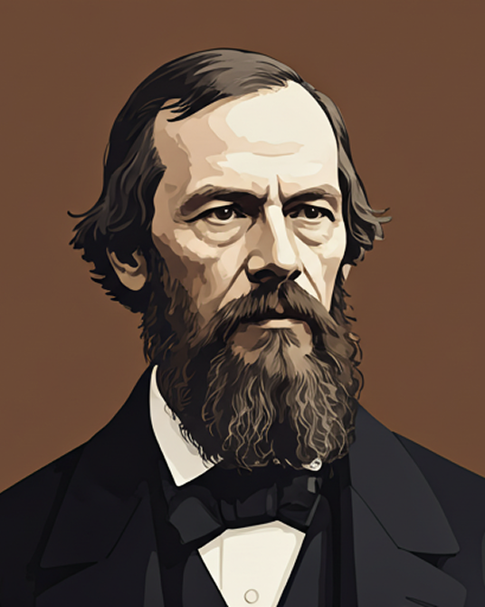
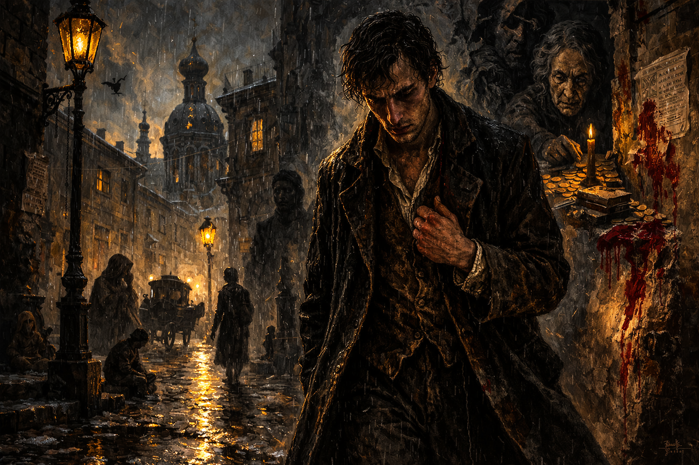
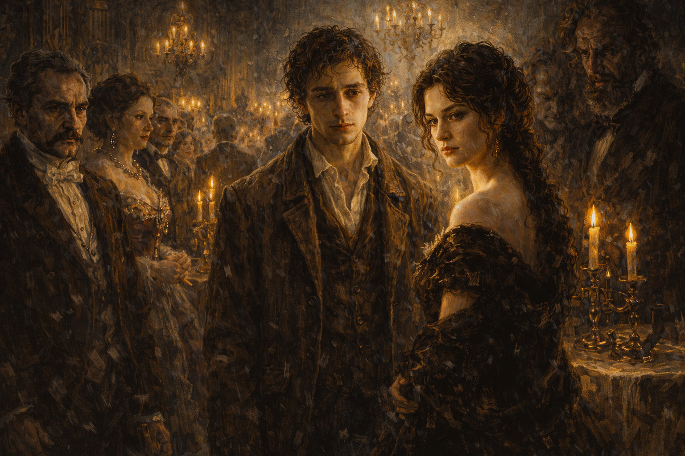
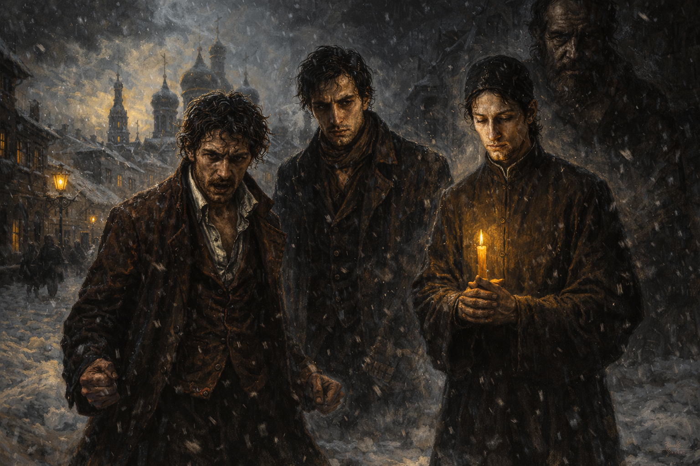
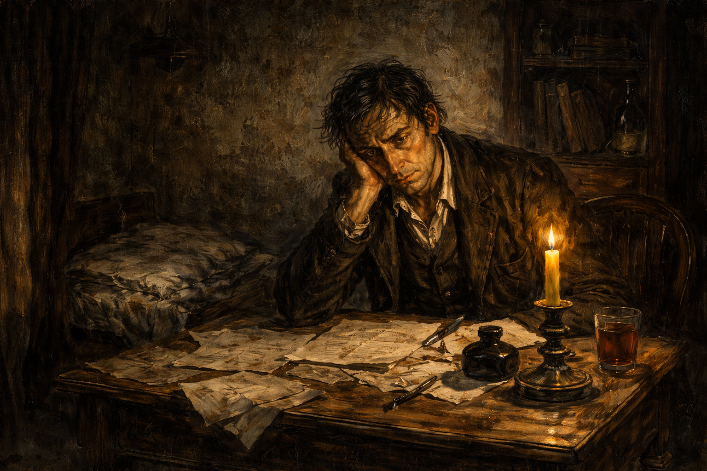
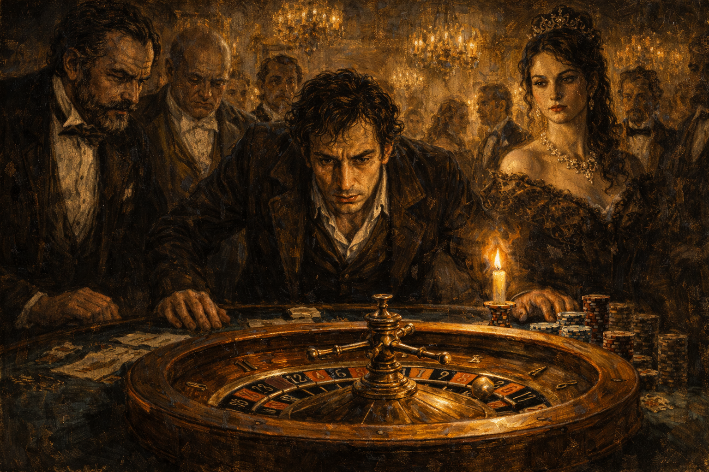
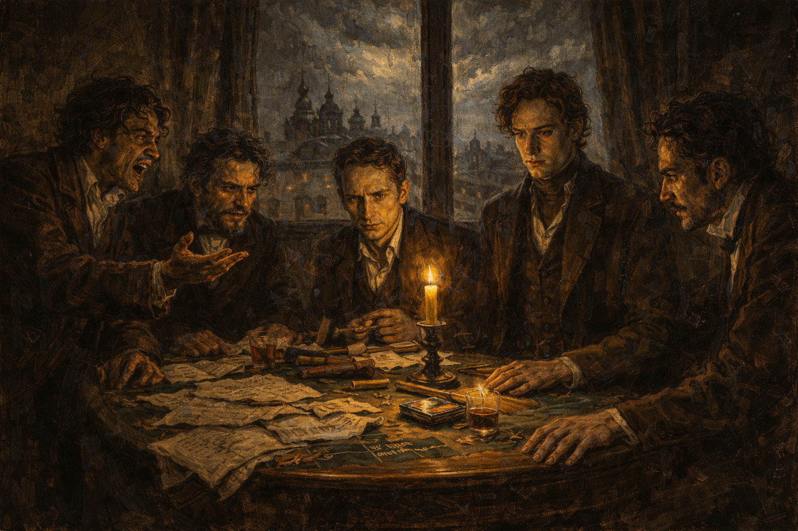
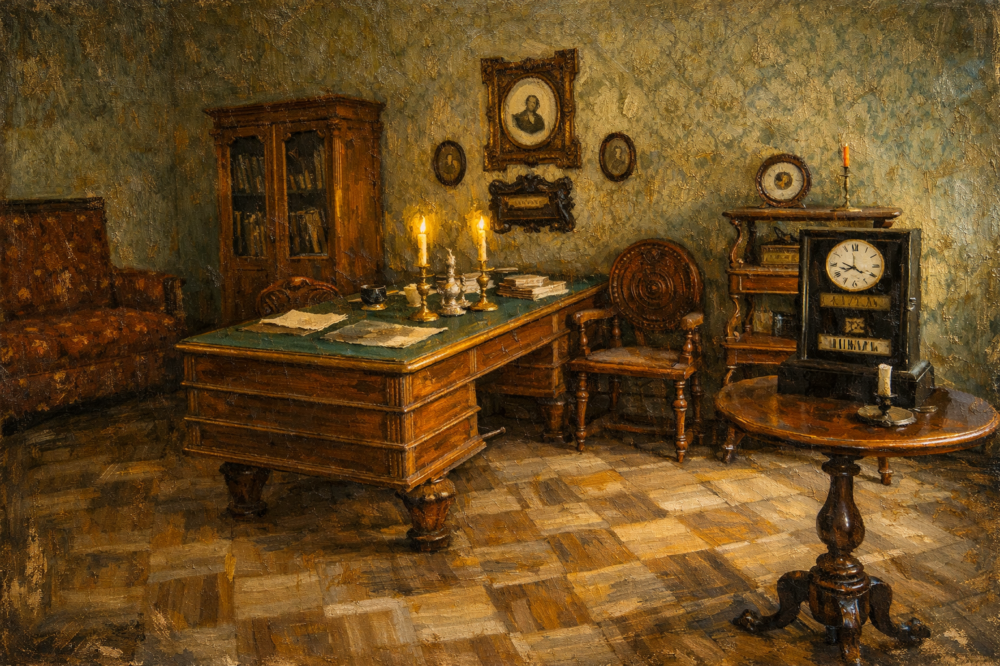

Existencialismo
Uma exploração da liberdade individual, da angústia moral e da solidão em um universo aparentemente indiferente ou irracional.

Arquivo editorial dedicado ao escritor
“Viver sem esperança é deixar de viver.”
Explore um percurso de conflitos interiores, fé, culpa e redenção na literatura de um dos maiores analistas da condição humana. Um arquivo pensado como portal de leitura, contemplação e estudo.
Temas centrais
A obra de Dostoiévski mergulha nos cantos mais sombrios da psique humana, lançando bases para debates sobre liberdade, sofrimento, consciência e transcendência.
Uma exploração da liberdade individual, da angústia moral e da solidão em um universo aparentemente indiferente ou irracional.
A crença recorrente de que o sofrimento pode revelar a verdade íntima do ser, conduzindo à humildade, ao confronto interior e à transformação.
A possibilidade dramática de renascimento moral e perdão divino, oferecida até mesmo às almas mais feridas e contraditórias.
Biblioteca essencial
Os pilares fundamentais da literatura psicológica moderna.

Um estudo psicológico vertiginoso sobre culpa, orgulho, febre moral e a lenta combustão da consciência.

A pureza espiritual em confronto com a vaidade, o desejo e a desordem social de um mundo em ruína.

Um drama espiritual grandioso sobre fé, dúvida, herança moral e responsabilidade entre pai e filhos.

Apresenta-se como um excerto das memórias de um empregado civil aposentado que vive em São Petersburgo.

Sombria deterioração de um jovem culto e talentoso. Este indivíduo sacrifica o melhor de si em prol de uma paixão doentia pelos jogos de azar.

Trata-se de uma "obra-panfleto" inspirada no assassinato real de um estudante, usado por Dostoiévski para protestar contra a tentativa de transplantar ideologias ocidentais (socialismo, niilismo, ateísmo) para a Rússia.

Trajetória humana
Nascido em Moscou em 1821, Fiódor Dostoiévski viveu a radicalidade do século XIX russo entre disciplina militar, prisão, exílio e retorno triunfal à literatura. Sua escrita amadureceu em contato direto com a fragilidade humana, a pobreza, a fé e os extremos da experiência moral.
Da juventude inquieta ao período na Sibéria, de volta às grandes narrativas filosóficas, sua obra converteu sofrimento em visão literária. Cada livro amplia a tensão entre pecado, redenção, consciência e transcendência.
Ver Bibliografia completa →